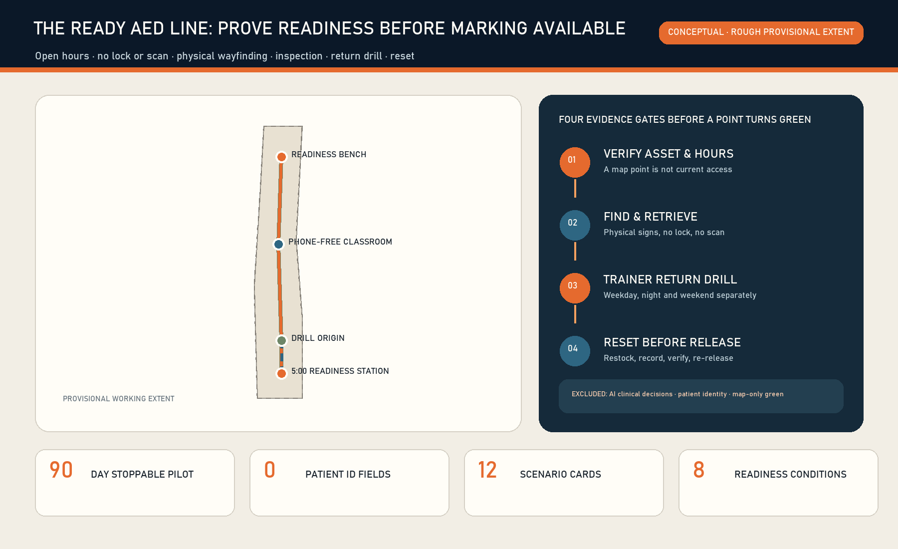
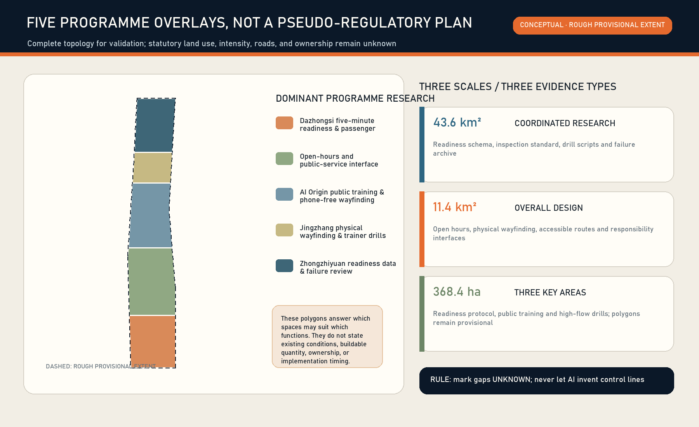
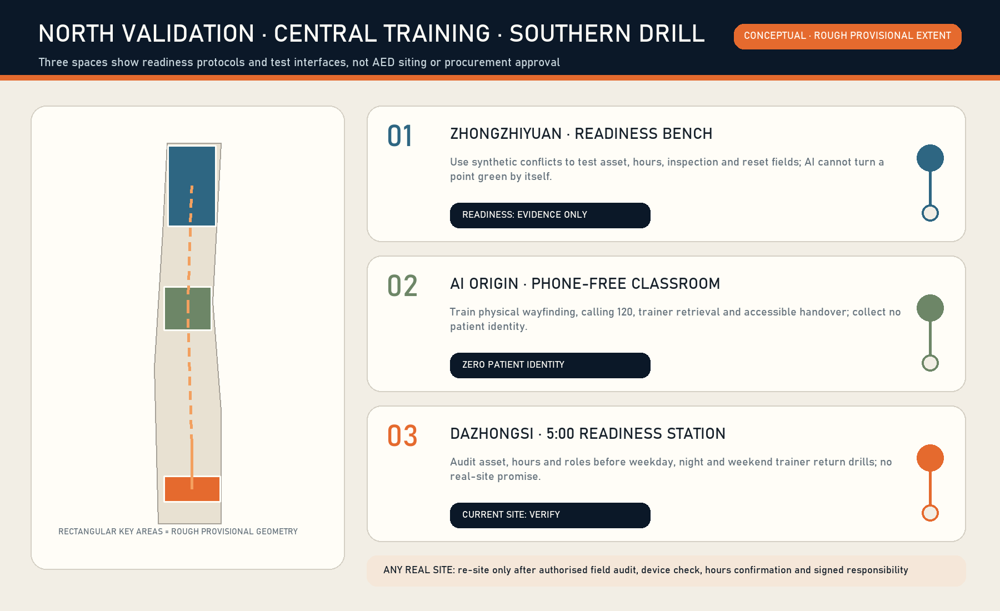
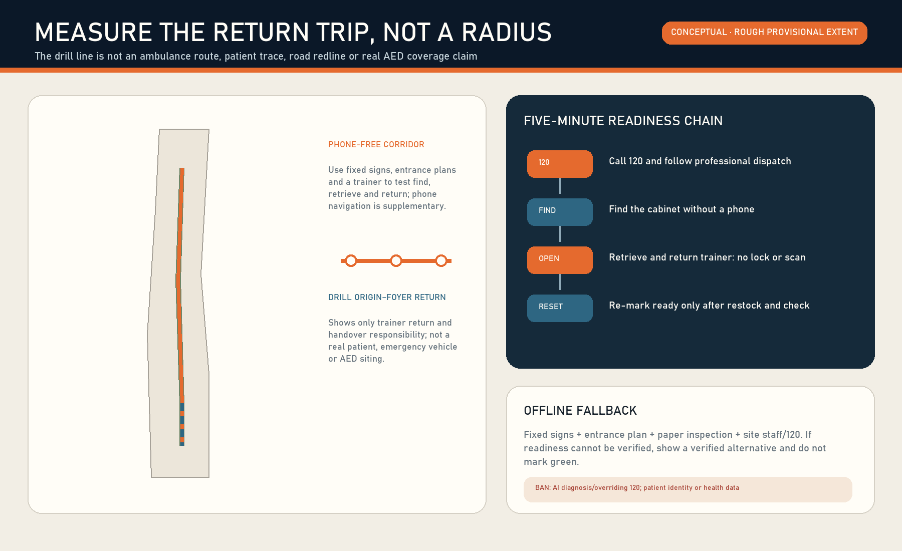
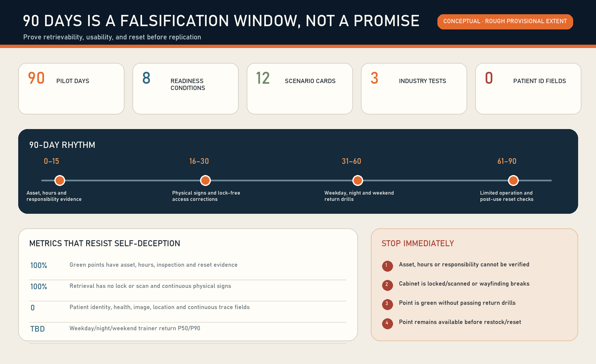

5:00 READINESS STATION
Dazhongsi audits asset, hours and roles before trainer return drills
The Ready AED Line is not another AED map. It joins asset, open hours, physical wayfinding, lock-free retrieval, inspection, trainer return drills and post-use reset into an auditable readiness contract. Call 120 first; the public may retrieve under voice guidance; site and device roles must be named.
Location check: upstream PROV-KEY-003 is a provisional placeholder not anchored to Dazhongsi metro. Public calculations in Issue #1029 report its centroid about 2.26 km away. This exhibit neither shifts it nor treats the mapped position as a real AED, service hour or retrieval route. A canonical or official update triggers whole-package recalculation.
No patient identity, health, image, location or continuous trace data. AI does not diagnose, replace 120, decide treatment, or turn a point green by itself.

Dazhongsi audits asset, hours and roles before trainer return drills
AI Origin trains physical signs, 120 voice guidance and accessible handover
Zhongzhiyuan tests eight readiness conditions with synthetic conflicts
Records aggregate return time only, never patient identity or traces


Asset and hours → continuous physical signs → no lock or scan → device/accessory inspection → named roles → time-banded trainer return drills → post-use restock/reset → 120 clinical boundary. AI only flags conflicts, aggregates and assists tickets.

Days 0–15 audit assets, hours and actors. 16–30 correct wayfinding and lock-free access. 31–60 run weekday, night and weekend trainer return drills. 61–90 allow limited operation only after all eight conditions and verify reset.

Five figures jointly cover three scales, key areas, programme overlays, physical wayfinding, trainer return drills, responsibility, 90-day stages and AI boundaries. All area ratios use the rough provisional extent for consistency checks only.
11,412,825.386 m²
5.1649% conceptual learning corridor
0.4604% conceptual nodes
Mobility: trainer return responsibility line. Blue-green space: phone-free learning corridor. Architecture: training/readiness prototypes. Renewal: wayfinding, cabinet and reset micro-upgrades. AI scenarios: conflict flags, aggregation and ticket assistance.
Formal v2 bilingual package: 13 chapters, five figure families, three spatial scales, 12 scenario cards, eight readiness conditions and three industry tests.
Repository scripts verify deterministic, professional, spatial, and visual gates; provisional geometry remains low confidence.
Primary government pages, public repositories, and licences are recorded in sources.json. This exhibit loads no remote resources.
Concept nodes cannot become available AED points or procurement commitments before authorised field checks of devices, open hours, partners and five-minute performance.
AED asset/status separation, walking return routing, offline inspection, location-based fault assignment and open service requests come from primary public projects. National guidance and Beijing rules define retrieval and responsibility boundaries; licences and limits are recorded in sources.json.